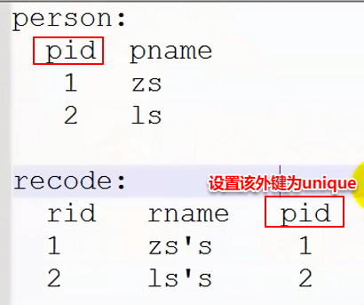

1.数据库设计
1.1 三个范式
1NF:强调列的原子性(域原子性),保证每一列都是单一属性且不可再分的
2NF: 在满足1NF的基础上再满足依赖性: 非主键类必须完全依赖于主键，而不能只依赖主键的一部分(主要针对联合主键而言?)
3NF: 在满足2NF的基础上再满足: 非主键列必须直接依赖于主键，不能存在传递依赖。 (确保每列都和主键列直接相关,而不是间接相关)
1.2 ER图:实体关系图
1.3 实体之间关系
一对一
一对多(多对一)
多对多
1.4 表的设计
实现两张表的一对一的关系:
方法1: 先让一张更重要的表(主表)的主键作为次表的外键,再对次表的该外键添加唯一约束,这样就能形成两张表的一对一关系了

方法2: 让次表的主键同时做外键,也能保证外键不重复出现引用主表的值,也可以保证两张表是一对一的关系

实现两张表的一对多的关系:
添加外键即可,外键是添加在"多"方
实现两张表的多对多的关系:
方法: 添加第三张表维护关系,其中第三张表的两个字段分别是前两张表的主键做的外键,并将这
两个外键添加为联合主键(保证实体完整性)
2.数据库优化
1.先筛选再join(连接、联合。也就是指表连接查询)
2.join一般优于子查询(sql层级越深效率越低)
3.order by 少用(造成io瓶颈,cpu占用太多)
4.写sql的时候尽量让查询走索引,不要有索引不用查了别的(出现索引失效状况)
5.尽量不要使用select(*)
具体使用:
1.在查询时尽量不要使用select(*)
*是通配符,会先查询该表的所有字段名称,然后继续剩余操作。(即使把全表的字段名称都写一遍也优于写select(*))
误区:
1.select a,b from table和select a,b,c from table
查询以记录为单位。所以上表并不是前面的语句性能优于后面,而是性能一样的
2.select count(*)、count(1)、count(主键)
三者含义不同但结果一致。count(1)、count(主键)的性能一般是优于count(*)的
但count(1)和count(主键)不是在所有情况优于count(*)
注意: count(1)不是只可以是数字1, 里面写任何数字都和写count(1)效果一样, 如count(0)、count(1.5)都等价于count(1)。
2.尽量避免导致索引失效的状况: (以下情况若不遵守 ,都可以导致索引列失效)
1.使用索引列时不能在条件语句中使用否定,如使用 null / not null / != / <>等
2.使用索引列时不要参与计算或者使用函数(如不要使用四则运算,substr()等)
如: select * from emp where sal/10>100; (假如sal是索引列,那么这个索引已经失效了)
优化后的写法是: select * from emp where sal>100*10;
3.使用索引列时不要使用'包含'或者模糊查询(like)
如: select * from emp where name like '%h%'; (假如name是索引列,那么这个索引已经失效了)
但: select * from emp where name like 'h%'; (这样索引就没有失效了 ,但效率仍旧是降低了)
并且: select * from emp where name = 'mike';(使用精确查询的效率当然是优于模糊查询的,"="必然优于"like")
4.使用索引列时尽量不要使用or(使用or也会使索引失效, 应该使用union/union all来代
替or。其中union all 优于union ,因为不用去重)
3.MySQL如何允许远程连接(首先要先看看防火墙的3306端口是否,开启)
方法1.在连接了mysql 服务器中找到mysql库，并找到该库里的user表中,host字段都默认绑定localhost,将其修改为%。
(但这里毕竟是修改了root用户的权限,要小心安全问题)
在连接的mysql库中的user表中有显示host字段,不改的话当前主机的mysql只能连接localhost的用户,不支持远程连接

修改方法:
update user set Host = '%' where User = 'root'; #("%"表示通配符,意思就是所有皆可,就像它在查询里的意思一样)
flush privileges; #上面是修改了权限,修改了权限光修改时不够的,需要立即刷新一下权限
这时候再直接新建一个连接,如下图,192.168.5.226是路由器分配的IP地址,即ipconfig出来的路由地址,这时候也能直接连接上
本机Windows系统里的MySQL服务器了（这种用路由器（或者说网关）分配的ip地址连接mysql的方式也是远程连接）

方法2. 专门给某个mysql的用户设置为可以远程访问的用户,并给其设置远程访问时登录的密码(该密码不一定要是本地登录的密码)
grant all privileges on *.* to 'root'@'%' identified by 'root'
with grant option;
flush privileges;
意义如下:
授权之后user表变为如下,新增的一行为远程登录的账号:

如果赋予了某虚拟机远程登陆权限，则可以直接在Windows上用主机名或网关分配的ip地址就能连接该虚拟机的mysql，如果没有设置远程登录权限，则在Windows上连接不了该虚拟机的mysql，该虚拟机里的mysql只能被该虚拟机自己的某软件通过网卡上的本机回环地址连接。Windows系统上的mysql也是一样的，如果没有远程登录权限，则不能被其他主机访问，也不能在自己主机上直接用网关分配的ip地址登录，因为网关分配的ip是由路由器给的，连接mysql的软件访问网卡，网卡还要访问路由器，这种间接得到ip地址的方式也是远程登录
下图是未设置远程登录权限的Windows中的mysql中的mysql库的user表（此时是不能用网关分配的ip地址连接该数据库的，只能用localhost或127.0.0.1连接该数据库）：

下图是已经用方法2赋予了远程登录权限的虚拟机中的mysql中的mysql库的user表（我的hadoop集群中，不管是哪台虚拟机，表都是如下图所示，其中赋予远程访问权限的方式与方法二的语句一模一样）：

观察上面两图，可以发现虚拟机中已经有很多方式可以连接该虚拟机的mysql，即支持远程连接；而Windows中则只能用localhost或127.0.0.1连接mysql，即还不支持远程连接。
4.备份和还原(在cmd里直接执行的,不需要先登录MySQL)
备份:
mysqldump -uroot -p dbname tname > d:/a.sql
其中:mysqldump是备份的命令; -uroot -p(root)表示用root用户的身份登录mysql; dbname表示要备份的数据库;
>表示重定向的意思,重定向到d:/a.sql这个本地地址中去,也就是保存(引用)到这个本地地址中去,
因为"mysqldump -uroot -proot dbname tname"是以引用的形式存在,还没有备份到具体的地址,而">"和"d:/a.sql"
就是起这个作用的。
还原:(将备份好的数据还原到mysql服务器中)
mysql -uroot -proot < d:/a.sql #">"是输出;"<"是输入
先登录到mysql数据库再还原数据的命令是: source d:/a.sql
5.JDBC
1.什么是JDBC(java database connectivity)
sun提出的用于java连接数据库的统一规范,主要由一系列接口组成。
如果程序员想用每次都用同一套代码来实现对不同数据库的操作, 就可以用到jdbc。不然的话每次都要写不同的代码连接
不同的数据库服务器

进行jdbc开发的前提:
写好jdbc接口:在 jdk中(java.sql / javax.sql)
找到不同数据库驱动: 即不同数据库的具体代码实现(由数据库厂商提供)
2.jdbc实现原理

3.JDBC的开发步骤
1.注册驱动(即上图的JDBC Driver, 目的是要让jdbc知道我们要连接的是哪个数据库)
2.获取连接
3.给数据库服务器发送sql命令
4.获取响应数据并处理
5.释放资源(即关闭连接。如果不释放其他的客户端就没法连接该数据库服务器了)
4.入门案例
4.1 创建一个java程序,然后导入MySQL的jdbc的驱动(JDBC Driver)的jar包, 这个在安装完MySQL的时候就提供了,
在如下目录

将上面这个文件复制到创建的项目中去(新建一个lib文件夹,将其放在其中)。并且右键该文件, 通过"Add to Build Path"将
这个jar包引用到项目中

结果如图所示:

4.2 注册驱动
4.3 获取连接(java程序和mysql服务器建立连接)
如何获取连接?
类似于我们访问百度时的url(统一资源定位符):
而在百度搜索"斗鱼直播"时的url是: http://www.baidu.com/s?wd=斗鱼直播&rsv_spt=1&...
即说明访问网站的url格式是: prot://ip:port/path?k1=v1&k2=v2
我们连接数据库服务器的url格式是类似的,是: 协议:子协议://端口/具体的数据库名?用户名=xxx&密码=xxx
则访问我们mysql创建好的数据库的url就是: jdbc:mysql://localhost:3306/bd1811?user=root&password=root
同样的,访问其他数据库也类似。
连接oracle数据库的url是: jdbc:oracle:thin://localhost:1521/具体的数据库名?用户名=xxx&密码=xxx
http:// 超文本传输协议(html文档) 明文传输(所有内容都可见)
https:// SSL/TLS:校验,密文传输
所以访问我们mysql创建好的数据库的url最好加一个SSL,使用加密传输:
jdbc:mysql://localhost:3306/bd1811?user=root&password=root&useSSL=true
4.4 发送sql命令(可以直接将java程序当成MySQL的客户端了)
4.5 释放资源
具体代码如下:详情见eclipse的workplace为"F:\Java\eclipse_workplace_ALL\MySQL网课代码"下的项目JdbcDemo下的test包的
Test.java文件


5.sql注入问题
sql注入:利用SQL语句,绕开sql运算规则,使得程序无法正确校验
原因:sql拼接导致校验规则被修改
statement对象发送的是静态sql(也就是确定的,一段完整的已固定的sql)
以下代码是使用statement对象模仿网站登录时的数据库访问


所以引入PreparedStatement接口: 他是Statement的子接口
PreparedStatement的好处是可以先对sql执行预编译,动态实现赋值
以下代码是用PreparedStatement来解决上一个login方法中因为使用了字符串拼接导致改变了原有的sql规则的问题
新写了一个login2方法,其中改变的只有以下部分:

这些代码的详情见eclipse的workplace为"F:\Java\eclipse_workplace_ALL\MySQL网课代码"下的项目JdbcDemo下的test
包的Test.java文件
6.dao的开发
(1)
分层开发的具体:
早期的web架构图,这也是为什么分层开发的由来?
(2)dao的面向接口开发
一个接口 + 一个或多个实现类
面向接口开发的体现,就是: 当实例化接口类时,new的是该接口的实现类,这样的话,实现类里的具体东西进行修改就对他完全没有影响了
如下图:其中StuDao是接口类,StuDaoImpl是StuDao的实现类

具体代码的详情见eclipse的workplace为"F:\Java\eclipse_workplace_ALL\MySQL网课代码"下的项目JdbcDemo下的dao
包、entity包和test包下的所有内容(test.java类就只有主方法是相关的,其他方法都是前面的内容的代码)。其中dao/impl包
下的StuDaoImpl2类和StuDaoImpl3类是StuDaoImpl类的代码优化而已
更加松耦合的方式如下: 其中类D是接口类, 类B和类E是D的两个不同的实现类,当类A需要调用类D的方法由类B中的实现变为
类E中的实现时,类似于上图的这种写法 D d = new B();是要改这句代码的,要将这句改为D d = new E(); 而改原码是不方便的,
更好的方法是如下图类A的做法,在成员变量里只定义一个 类D的对象, 而在其构造方法里来传入具体使用的是哪个实现类,给类
A传哪个,它就调用哪个实现类。